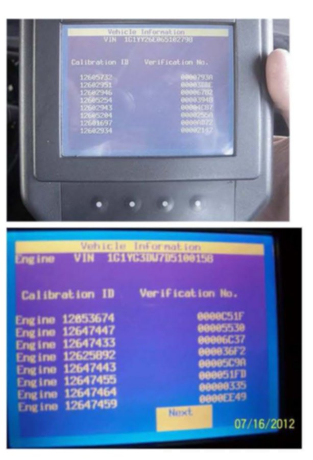

Section 4
4. Retrieving Engine Calibration ID and Verification No. (Number) Information Using the Tech 2 - This Action is Required for ALL Service Agents (Model Dependent)Notice:
This information applies to vehicles that are Tech 2 compatible and is typical of the procedure that will be used.
1. Connect the Tech 2 to the vehicle.
2. Go to: Diagnostics and build the vehicle.
3. Select: Powertrain.
4. Select: Engine.
5. Select: Engine Control Module or PCM.
6. Select: Module ID Information or I/M Information System if the Module ID Information selection is not available.
7. *If "I/M information System" was selected, it may be necessary to select "Vehicle Information" in order to display the calibration information.
^ If the CVN information is displayed as "N/A", it will be necessary to contact the TCSC to obtain the CVN information.
^ If the CVN Information is displayed as all zeroes, refer to Section: 5. Tech 2 Displaying All Zeroes for the Verification Numbers on the Vehicle Information - Calibration ID and Verification No. (Number/CVN) Screen

Notice:
^ Two examples of the Tech 2 Vehicle Information - (Engine) Calibration ID and Verification No. screens are shown.
^ The Tech 2(R) Vehicle Information - Calibration ID and Verification No. screen will differ slightly depending on vehicle and model year.
Take a CLEAR digital picture(s) of the Tech 2 Vehicle Information screen showing the entire VIN, (Engine) Calibration ID and Verification No. (Number/CVN) and save it in .jpg format.
Notice:
It is recommended that an electronic copy of the Tech 2 screen photograph(s) also be saved.
8. Retain the printout information and the Tech 2 screen photograph(s) with the repair order.